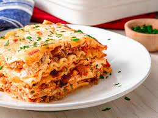

Lasagna

Description
Lasagna is a classic Italian dish that is typically made with layers of flat pasta sheets, tomato-based sauce, cheese, and various other ingredients such as meat, vegetables, and herbs. The dish is named after the pasta sheets themselves, which are known as "lasagne" in Italian.
Ingredients
- 1 pound ground beef
- 1 onion, chopped
- 2 cloves garlic, minced
- 1 can (28 ounces) crushed tomatoes
- 2 cans (6 ounces each) tomato paste
- 2 tablespoons sugar
- 2 teaspoons dried basil leaves
- 1 teaspoon salt
- 1/4 teaspoon black pepper
- 1/4 cup chopped fresh parsley
- 12 lasagna noodles
- 1 egg
- 1 1/2 cups ricotta cheese
- 1/4 cup grated Parmesan cheese
- 4 cups shredded mozzarella cheese
Recipe
- In a large skillet, cook the ground beef, onion, and garlic over medium heat until the meat is browned and the onion is tender. Drain off any excess fat.
- Add the crushed tomatoes, tomato paste, sugar, basil, salt, pepper, and parsley to the skillet. Bring to a boil, reduce heat and simmer for 30 minutes.
- Cook the lasagna noodles according to the package directions. Drain and rinse with cold water.
- In a small bowl, beat the egg. Add the ricotta cheese and Parmesan cheese and mix well.
- Preheat oven to 375°F (190°C).
- To assemble the lasagna, spread about 1 cup of the meat sauce in the bottom of a 9x13 inch baking dish. Arrange 3 lasagna noodles over the sauce. Spread about 1/3 of the ricotta cheese mixture over the noodles. Sprinkle with 1 cup of mozzarella cheese. Repeat layers two more times.
- Cover with aluminum foil and bake for 25 minutes. Remove the foil and bake for an additional 25 minutes, or until the cheese is melted and bubbly.
- Let the lasagna stand for 10 minutes before serving.
Back